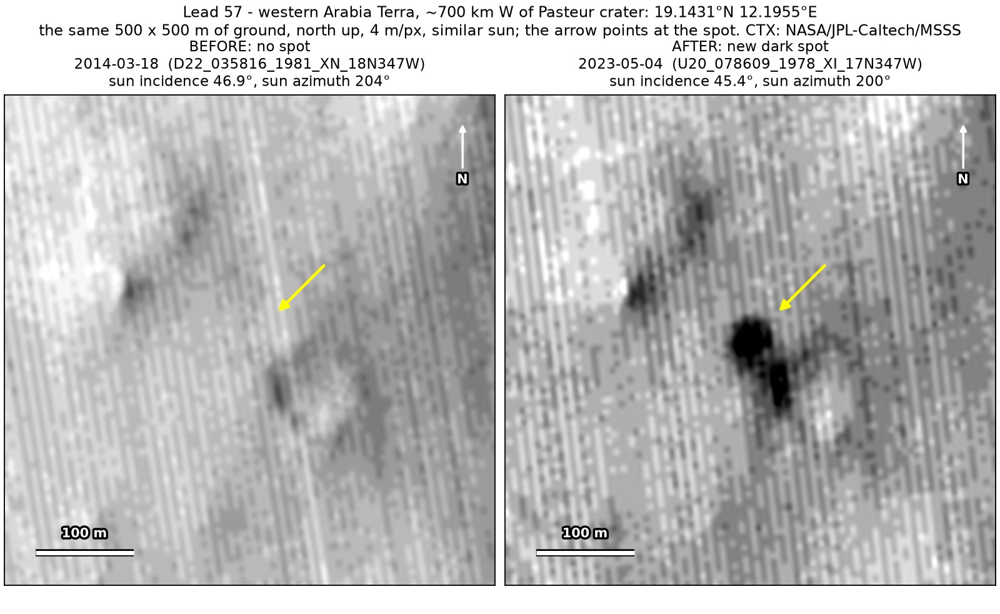
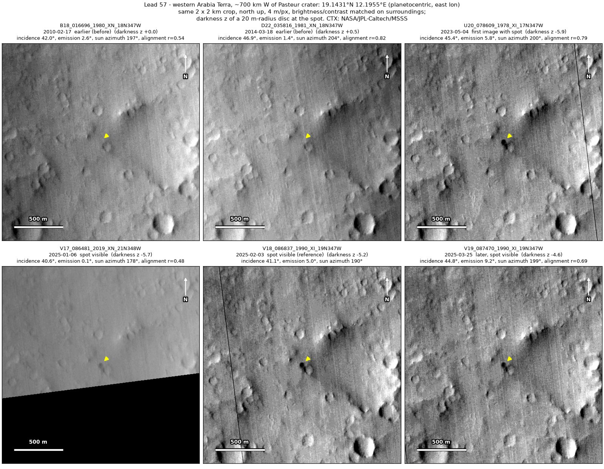
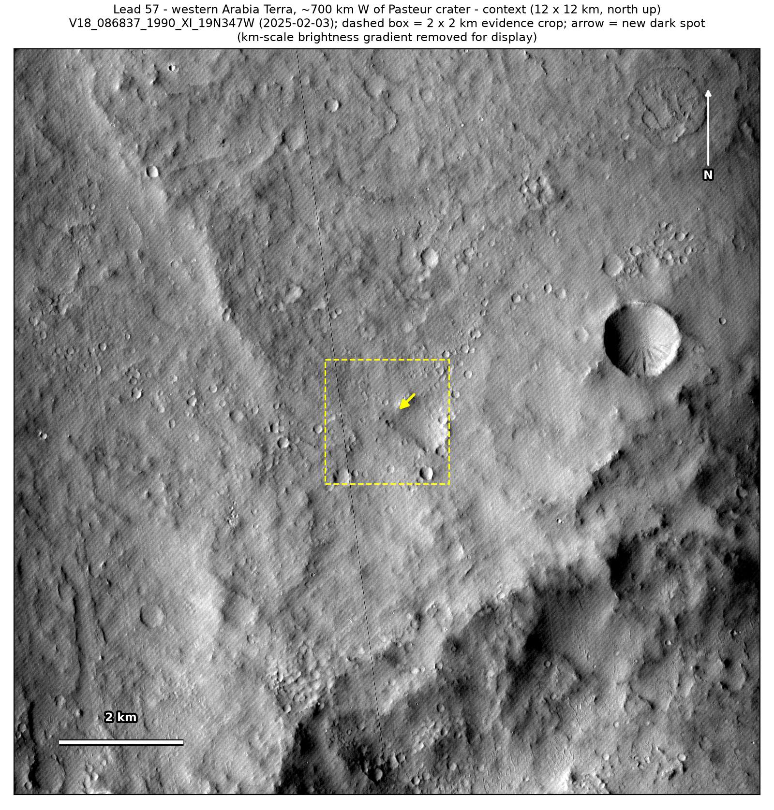
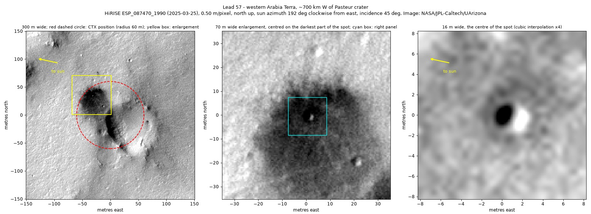
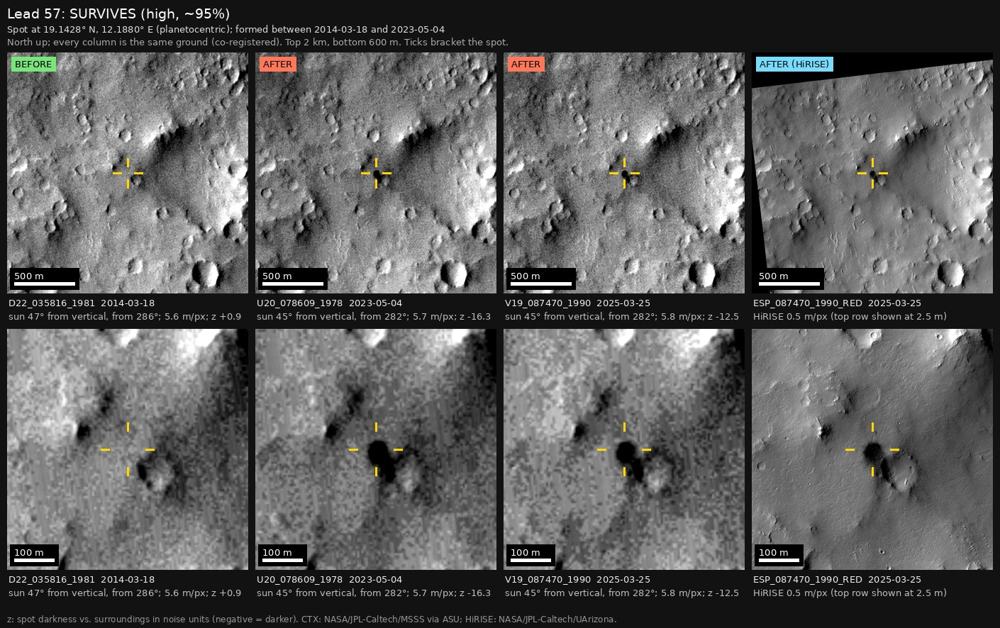
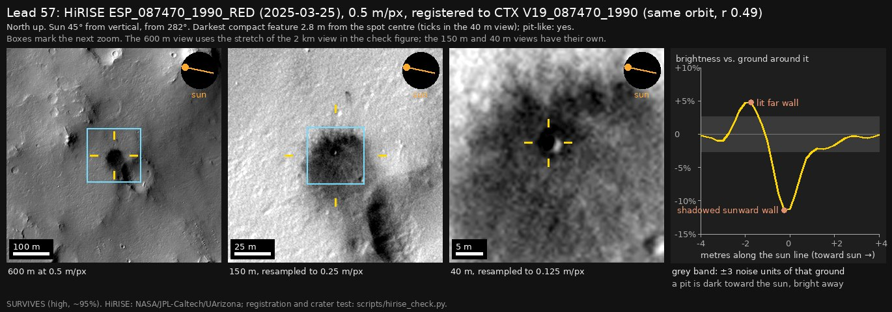

Professor of Mathematics
Paata Ivanisvili
Department of Mathematics, University of California, Irvine

← Possible new impact sites on Mars
Candidate 57: Western Arabia Terra, about 700 km west of Pasteur crater
Strong · roughly 90%

What changed. A dark patch about 40 m across appeared beside an older crater 80 m wide in western Arabia Terra between March 2014 and May 2023, and is still there in March 2025; four CTX images from four orbits show it. A dark band stretches about 70 m south-south-east from it along the older crater’s west rim.
Why it may be a new impact. Images from 2010 and 2014 line up well and show nothing there; the March 2014 one was taken under the same sun as the May 2023 image. A high-resolution HiRISE image shows a small crater at the centre of the patch, just what a small fresh impact leaves.
- Location
- 19.143° N, 12.196° E
- Absent
- 17 February 2010 and 18 March 2014
- Present
- 4 May 2023, 6 January 2025, 3 February 2025 and 25 March 2025 (CTX and HiRISE)
- Size
- Dark patch 40 × 46 m, measured in the HiRISE image, around a crater about 2.5 m across
- Confidence
- Strong candidate: roughly 90% likely to be a new impact.
- Nearby
- Candidate 72, 5.2 km to the north-north-west, formed between the same two images of March 2014 and May 2023.
- Caveat
- By chance, NASA’s HiRISE camera photographed the spot on 25 March 2025, after it formed, on the same orbit as the March 2025 CTX image. It shows a crater about 2.5 m across at the centre of a 40 × 46 m dark patch, dark on its west wall and bright on its east wall, the shading of a small pit lit from the west-north-west. The patch could be a slope streak left by dust sliding down from the older crater’s rim, but the small crater at its centre argues against that, and the dark band may be a small avalanche set off by the impact. The small crater could be an old one stripped of dust by the wind or a dust devil, but that is unlikely for a round patch with no track. Like every candidate here, it is unconfirmed: see the caveat.




